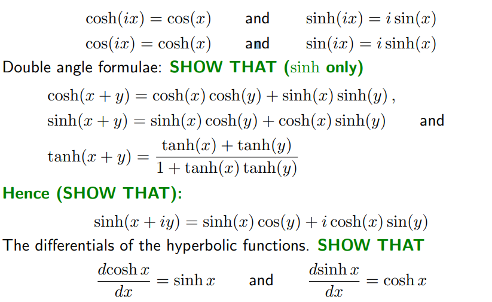

\[\textrm{Re}(z)=\frac{z+z^*}{2}\qquad\&\qquad\textrm{Im}(z)=\frac{z-z^*}{2i}\]
\[\frac{1}{z}=\frac{z^*}{|z|^2}\]
If we have an AC circuit with capacitors or inductors in it, then we can analyse the circuit using complex numbers.
In this case we calculate the total impedance, \(Z_{Tot}\). The impedance depends on the angular frequency of the alternating current: \(\omega=2\pi f\), and the components:
\[z=x+iy=r(\cos\theta+i\sin\theta)=re^{i\theta}\] Convert polar to Cartesian with: \[x=r\cos\theta\qquad\&\qquad y=r\sin\theta\] Convert Cartesian to polar with: \[r=\sqrt{x^2+y^2}=|z|\qquad\&\qquad\tan\theta=y/x\] (adding or subtracting \(\pi\) to get into correct quadrant)
We define \(\sin(x)\) and \(\cos(x)\) as the following, using the consequences of Euler’s Formula. \[\cos(x)=\frac{e^{ix}+e^{-ix}}{2}\qquad\&\qquad\sin(x)=\frac{e^{ix}-e^{-ix}}{2i}\]
We can use find the formulas for the arc functions, by using their normal respective functions and a clever use of quadratics. \[\begin{align} &\textrm{Let}\;\;x=\cos(y)=\frac{e^{iy}+e^{-iy}}{2}\\ &2x=e^{iy}+e^{-iy}\\ &e^{iy}-2x+e^{-iy}=0\\ &\left(e^{iy}\right)^2-2xe^{iy}+1=0\\ &\textrm{Quadratic Equation}\\ &e^{iy}=x\pm\sqrt{x^2-1}\\ &\therefore iy=\ln(x\pm\sqrt{x^2-1})\\ &\implies y=-i\ln(x\pm\sqrt{x^2-1})=\arccos(x) \end{align}\]
We know that \(\left(e^{i\theta}\right)^n=e^{in\theta}\) for \(n\in\mathbb{Z}\) and \(n\geq 0\), hence: \[(\cos\theta+i\sin\theta)^n=\cos(n\theta)+i\sin(n\theta)\] This is De Moivre’s Theorem and is used to aid trigonometric algebra. This can be demonstrated without the use of Euler’s theorem. (It predates Euler’s theorem) You can work out triple angle formulas etc using this method: \[\cos(3\theta)+i\sin(3\theta)=(\cos\theta+i\sin\theta)^3\] From real and imaginary parts of the expansion: \[\begin{align} &\cos(3\theta)=\cos^3\theta-3\cos\theta\sin^2\theta\\ &\sin(3\theta)=3\cos^2\theta\sin\theta-\sin^3\theta \end{align}\]
For large values of \(n\) expanding brackets can be tedious. However we can use the binomial expansion: \[(a+b)^n=\sum^n_{r=0}C^n_ra^{n-r}b^r\] ...Can use \(nCr\) on the calculator, or \[C^n_r=\frac{n!}{r!(n-r)!}\] Remember that \(0!=1\)
Example: Find the roots of \(z^3=1\) \[\begin{align} &\textrm{Obviously, we have}\;z=1\\ \\ &z^3=e^{i3\theta}=\cos(3\theta)+i\sin(3\theta)=1\\ \\ &\textrm{Re:}\;\cos(3\theta)=1\\ &3\theta=2n\pi\\ &\theta=\frac{2n\pi}{3}\\ \\ &\implies z=e^{2\pi i/3},e^{-2\pi i/3}, e^0(=1) \end{align}\]
Since \(e^{2\pi ki}=1\) for \(k\in\mathbb{Z}\), then: \[1^{\frac{1}{n}}=e^{\frac{2\pi ki}{n}}\] There are an infinite number of these (one for each \(k\)), but only \(n\) of them are different. These are the roots of: \[z^n-1=0\]
No! \[\begin{align} &\ln(a^b)=b\ln a\\ &a^b=\exp(b\ln a+2\pi inb)\;\textrm{for}\;n\in\mathbb{Z}\\ \\&\textrm{Hence:}\\ &(a^b)^c=\left\{\exp(b\ln a+2\pi inb)\;| \;n\in\mathbb{Z}\right\}^c\\ &(a^b)^c=\left\{\exp(cb\ln a+2\pi inb+2\pi imc)\;| \;n,m\in\mathbb{Z}\right\}\\ \end{align}\]
\(i\) in functions is just treat like a variable when it comes to differentiation, and \(i^2=-1\). Example Differentiate \(e^{i\alpha t}\) with respect to \(t\): \[\frac{d}{dt}e^{i\alpha t}=i\alpha e^{i\alpha t}\]
Its the same as above. Example: Evaluate: \(\int^4_0(t^2+i\sqrt{t})dt\) \[\int^4_0(t^2+i\sqrt{t})dt=\left[\frac{t^3}{3}+\frac{2it^{3/2}}{3}\right]^4_0=\frac{64}{3}+\frac{16}{3}i\]
An ODE can be a complex differential equation for \(z(t)\), for example: \[a(t)\ddot{z}+b(t)\dot{z}+c(t)z=d(t)\] In this case, we write \(z:\mathbb{R}\to\mathbb{C}\). That is \(z\) takes a real number \(t\) and gives a complex number \(z(t)\). The equation above is equivalent to two real differential equations: \[\Re(LHS)=\Re(RHS)\qquad\&\qquad\Im(LHS)=\Im(RHS)\] Example: Find the real and imaginary parts of: \[m\ddot{z}+2mf\dot{z}+kz=F_0e^{i\alpha t}\] We can use the definition of a complex number (\(z=x+iy\)): \[m(\ddot{x}+i\ddot{y})+2mf(\dot{x}+i\dot{y})+k(x+iy)=F_0(\cos(\alpha t)+i\sin(\alpha t))\] So we therefore get two ODE's \[\Re:\quad m\ddot{x}+2mf\dot{x}+kx=F_0\cos(\alpha t)\] and... \[\Im:\quad m\ddot{y}+2mf\dot{y}+ky=F_0\sin(\alpha t)\] To solve these, see PHYS113-Series and Differential Equations.
The easy way to remember this is to just take the exponential definitions of \(\sin\) and \(\cos\), remove all \(i\)'s from them, then add on a h to their name! \[\cosh\theta=\frac{e^\theta+e^{-\theta}}{2}\qquad\&\qquad\sinh\theta=\frac{e^\theta-e^{-\theta}}{2}\] They are the odd and even parts (respectively) of \(e^\theta\)
\[\cosh^2\theta-\sinh^2\theta=1\]
You can use the Taylor series of \(e^x\) and \(e^{-x}\), to work out the hyperbolics equivalent. \[e^x=1+x+\frac{x^2}{2!}+\frac{x^3}{3!}+\ldots\] \[e^{-x}=1-x+\frac{x^2}{2!}-\frac{x^3}{3!}+\ldots\] \[\cosh\theta=\frac{e^\theta+e^{-\theta}}{2}\qquad\&\qquad\sinh\theta=\frac{e^\theta-e^{-\theta}}{2}\] Hence \[\cosh(x)=1+\frac{x^2}{2!}+\frac{x^4}{4!}+\ldots\] \[\sinh(x)=x+\frac{x^3}{3!}+\frac{x^5}{5!}+\ldots\]

A function is analytic if it can be infinitely differentiated at every point. An analytic function also has a Taylor Series that converges to the function within the radius of convergence around some point \(x_0\). Let \(f(x,y)=u(x,y)+iv(x,y)\) and let \(z=x+iy\), then we have a pair of real functions \(u(x,y)\) and \(v(x,y)\). These can each be differentiated to give the four partial derivatives \[\frac{\partial u}{\partial x}, \frac{\partial v}{\partial y},\frac{\partial u}{\partial y},\frac{\partial v}{\partial x}\] If \(f\) is analytic then these four quantities satisfy the Cauchy-Riemann equations: \[\frac{\partial u}{\partial x}=\frac{\partial v}{\partial y}\qquad\textrm{and}\qquad\frac{\partial u}{\partial y}=-\frac{\partial v}{\partial x}\] All analytic functions have the following properties:
Thus knowing how an analytic function behaves on the complex plane, tells us information about the Taylor series, even if we wish to consider only real functions. Example: Show that \(f(z)=z^2+(3+i)z\) satisfies the Cauchy-Riemann equations. Solution: Let \(z=x+iy\) and \(f(x,y)=u(x,y)+iv(x,y)\) \[\begin{align} f(x,y)&=(x+iy)^2+(3+i)(x+iy)\\ &=x^2-y^2+2ixy+3x+3iy+ix-y \end{align}\] Therefore \[\begin{align} &u(z)=x^2-y^2+3x-y\\ &v(z)=2xy+3y+x \end{align}\] And \[\frac{\partial u}{\partial x}=2x+3\qquad\frac{\partial u}{\partial y}=-2y-1\] \[\frac{\partial v}{\partial x}=-2y+1\qquad\frac{\partial v}{\partial y}=2x+3\] Both C-R equations are satisfied.